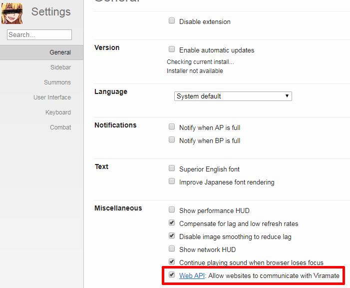
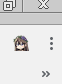
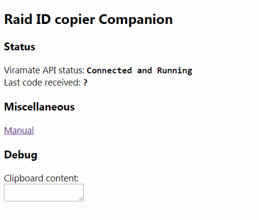
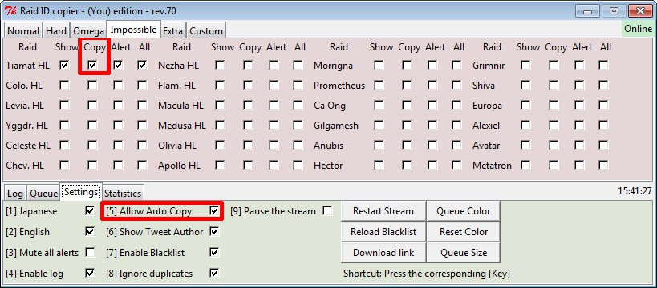

Manual - Raid ID copier Companion
Disclaimer:
This extension is still in an experimental stage.
Please report any bugs and send feedback to (You).
Feel free to look at the source code if you don't trust this extension.
You can also use the Raid ID Copier as usual, without this extension.
Or use this extension with any raidfinder equipped of an auto-copy feature.
● Enable Viramate Web API

● How to install this extension
Open the Chrome Extension Menu, turn on developer mode and load this extension by selection the folder.
● How to run the extension
Click on the icon:

It will open this page (or something similar):

As long as this page is open, the extension is running.
● Use the auto-copy
The javascript will read your clipboard for any new code so be sure to turn on 'auto copy' in the Raid ID Copier.

● Extension inner workings
This extension doesn't modify the game in any way, it will simply ask Viramate to join a battle with the code it read from the clipboard.
It will not try to join a raid if you are on these following pages:
Raid battles (solo, arcarum or multi)
Summon screens (solo, arcarum or multi)
Pending battles
Result screens (solo, arcarum or multi)
Any non GBF pages
In addition:
You'll be sent to the Pending battles automatically if needed.
If you are lacking BP, you must refill manually.